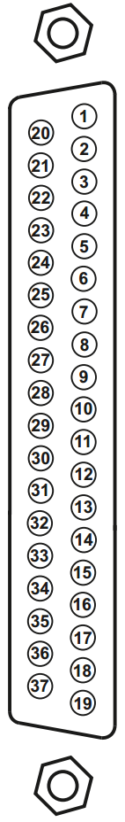

IO99X Pin Mapping — Reference information about the I/O module connector
| Pin | Signal | Pin | Signal | |
|---|---|---|---|---|
| 20 | Voltage Output 1 (-) |  | 1 | Voltage Output 1 (+) |
| 21 | Sense Input 1 (-) | 2 | Sense Input 1 (+) | |
| 22 | Voltage Output 2 (-) | 3 | Voltage Output 2 (+) | |
| 23 | Sense Input 2 (-) | 4 | Sense Input 2 (+) | |
| 24 | Voltage Output 3 (-) | 5 | Voltage Output 3 (+) | |
| 25 | Sense Input 3 (-) | 6 | Sense Input 3 (+) | |
| 26 | Voltage Output 4 (-) | 7 | Voltage Output 4 (+) | |
| 27 | Sense Input 4 (-) | 8 | Sense Input 4 (+) | |
| 28 | Voltage Output 5 (-) | 9 | Voltage Output 5 (+) | |
| 29 | Sense Input 5 (-) | 10 | Sense Input 5 (+) | |
| 30 | Voltage Output 6 (-) | 11 | Voltage Output 6 (+) | |
| 31 | Sense Input 6 (-) | 12 | Sense Input 6 (+) | |
| 32 | Ground | 13 | Ground | |
| 33 | Ground | 14 | Ground | |
| 34 | Ground | 15 | Ground | |
| 35 | Ground | 16 | +3.3V | |
| 36 | Ground | 17 | Hardware Input Enable (5V tolerant) | |
| 37 | Ground | 18 | Hardware Output Status | |
| 19 | Ground |